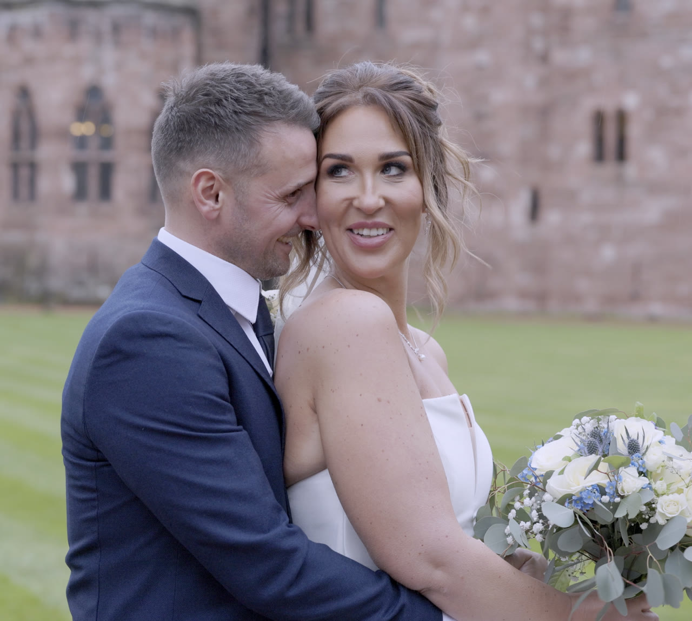

Same idea in each: a wedding film does not have to mean being directed. This page is the decision log for the look.
A · Chosen
Viewfinder
THE CAMERA FOLLOWS
The site's own REC frame becomes the one moving object: it crowds the couple, backs off, then turns into the film, the gallery and the coverage window.
Why it won: it explains the service with a diagram, looks like the site, and needs no footage rights beyond the four thumbnails.
B
Paper
SC. 02
Unhurried. Unobtrusive. Unmistakably you.
The site's white sections: editorial type on paper, very calm.
Why not: mostly text. It tells the idea and never shows it.
C
Footage first

PECKFORTON CASTLE
Robert & Laura
Full-frame stills from the four films with type over them.
Why not: four stills cannot carry 45 seconds, and type over faces fails contrast. It would be a showreel, not an explainer.
D
Numbers
£1,450
FILMS FROM
Lead with price, hours and delivery time as large figures.
Why not: it answers "how much" before the viewer has stopped worrying about "what will it feel like".